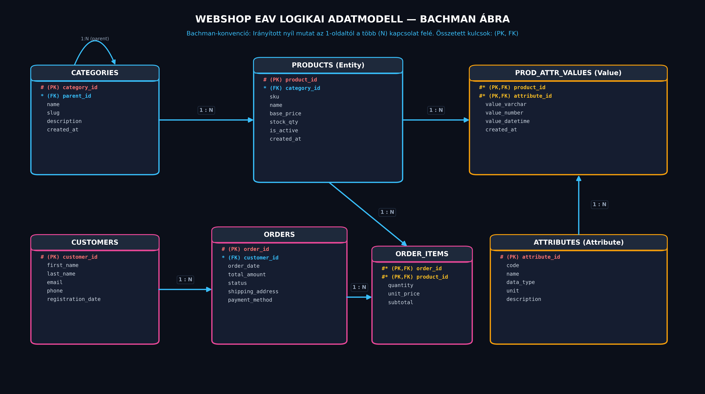

Korszerű Webshop Adatmodell
Entity-Attribute-Value (EAV) Architektúrában
Heterogén e-kereskedelmi termékkatalógus és tranzakciós rendelési alrendszer tervezése relációs adatbázisban a 3. normálforma (3NF) szigorú megtartásával.
Valós Piaci Probléma
Hogyan tároljunk több ezer eltérő műszaki paraméterrel bíró terméket anélkül, hogy a táblát teleszórnánk üres NULL mezőkkel?
7 Normalizált Reláció
Szigorú 3NF elvek, két összetett elsődleges kulcsos kapcsolótábla és származtatott kalkulált oszlopok alkalmazása.
100% Dockerizált
Előre konfigurált MariaDB 11.4 és Adminer konténerizáció, automata DDL/DML migrációval és Nginx webszerverrel.
Miért bukik el a hagyományos táblaszerkezet?
Egy általános webáruházban elektronikai cikkek, ruházat és háztartási gépek osztoznak a rendszeren.
❌ Hagyományos Anti-Pattern: Sparse Table
Ha minden attribútumot egyetlen gigantikus products táblába próbálunk belezsúfolni (CPU, RAM, képernyőméret, cipőméret, anyag, wattszám):
- Több száz oszlop, amelyek 85-95%-a NULL érték.
- Új termékkategória hozzáadásakor sémamódosítás (
ALTER TABLE) szükséges a teljes éles adatbázison. - Nehézkes indexelés, pazarolt tárhely és alacsony I/O hatékonyság.
✅ Választott Megoldás: EAV Modell
A dinamikus attribútumok relációkban tárolt sorként viselkednek az oszlopok bővítése helyett:
- Entity products: Csak a globális törzsadatok (SKU, név, ár, raktárkészlet).
- Attribute attributes: Metaadatok jegyzéke (szín, méret, tárhely, típus).
- Value product_attribute_values: Értékek kapcsolata összetett kulccsal.
Logikai Kapcsolati Modell (Bachman Ábra)
Klasszikus Bachman konvenció: entitás téglalapok mezőlistával, valamint 1-től az N (több) felé mutató irányított relációs nyilakkal.

Az EAV adattárolás típusbiztos struktúrája
Hogyan garantáljuk az integritást és a helyes típuskezelést relációs környezetben?
products
Minden fizikai vagy digitális cikk közös oszlopai: cikkszám (sku), megnevezés (name), alapár (base_price), státusz.
attributes
Meghatározza a tulajdonság kódját (color, ram_size), magyar nevét, mértékegységét (GB, kg, col) és az elvárt SQL típust.
product_attribute_values
Több típusos értékkolonnát használ (value_varchar, value_number, value_datetime), így a numerikus adatok matematikai műveletekben is közvetlenül számolhatók.
Összetett Elsődleges Kulcs (Composite Primary Key) Garancia:
A product_attribute_values tábla elsődleges kulcsa PRIMARY KEY (product_id, attribute_id). Ez garantálja, hogy egy termékhez egyetlen attribútumból legfeljebb pontosan egy érték tartozhat, megelőzve az adatütközést 3. normálformában.
Kategória és Termék Táblák
Rekurzív fatermészetű kategóriák és a termék entitás mezői.
| Tábla | Mező | Típus | Kulcs / Kényszer | Leírás |
|---|---|---|---|---|
categories |
category_id | INT | PK AUTO_INCREMENT | Kategória egyedi azonosítója |
categories |
parent_id | INT NULL | FK -> categories.category_id | Önhivatkozó rekurzió főkategóriákhoz |
categories |
name / slug | VARCHAR(100) | UNIQUE NOT NULL | Keresőbarát elérési név |
products |
product_id | INT | PK AUTO_INCREMENT | Mag entitás kulcsa |
products |
category_id | INT | FK -> categories.category_id | Besorolt kategória kapcsolat |
products |
sku / name | VARCHAR | sku: UNIQUE NOT NULL | Cikkszám és megjelenített név |
products |
base_price | DECIMAL(12,2) | NOT NULL | Fixpontos nettó/bruttó alapár |
Vásárlók és Megrendelések
Megbízható rendeléskezelés állapotgéppel, szállítási adatokkal és származtatott oszlopokkal.
orders Tábla (Rendelés Fejléc)
Minden rendelés pontos időbélyeggel (order_date), státusszal (pending, paid, shipped, cancelled), végösszeggel és szállítási címmel rendelkezik.
order_items Tábla (Összetett Kulcs)
Összeköti a rendelést a megvásárolt termékkel. Az elsődleges kulcsa összetett: PRIMARY KEY (order_id, product_id).
subtotal = quantity * unit_price (STORED GENERATED ALWAYS)
Egytáblás és Függvényes Lekérdezések
A feladatkiírás 1. és 2. kötelező lekérdezési mintája egymás alatt, kényelmes teljes szélességű eredménytáblával.
SELECT product_id, sku, name, base_price, stock_qty
FROM products
WHERE is_active = 1
ORDER BY base_price DESC;SELECT
c.name AS kategoria_nev,
COUNT(p.product_id) AS termek_db,
MIN(p.base_price) AS legolcsobb_ar_huf,
MAX(p.base_price) AS legdragabb_ar_huf,
ROUND(AVG(p.base_price), 2) AS atlagos_ar_huf
FROM categories c
LEFT JOIN products p ON c.category_id = p.category_id
GROUP BY c.category_id, c.name
HAVING termek_db > 0
ORDER BY atlagos_ar_huf DESC;EAV Pivot JOIN és Allekérdezés (Subquery)
A feladatkiírás 3. és 4. kötelező lekérdezési mintája egymás alatt, kényelmes teljes szélességű nézetben.
SELECT
o.order_id,
CONCAT(c.last_name, ' ', c.first_name) AS vasarlo,
p.name AS termek,
oi.quantity AS db,
oi.subtotal AS osszesen,
COALESCE(pav_color.value_varchar, '-') AS szin,
CONCAT(COALESCE(pav_storage.value_number, 0), ' GB') AS tarhely
FROM orders o
JOIN customers c ON o.customer_id = c.customer_id
JOIN order_items oi ON o.order_id = oi.order_id
JOIN products p ON oi.product_id = p.product_id
LEFT JOIN product_attribute_values pav_color
ON p.product_id = pav_color.product_id
AND pav_color.attribute_id = 1
LEFT JOIN product_attribute_values pav_storage
ON p.product_id = pav_storage.product_id
AND pav_storage.attribute_id = 2
WHERE o.status IN ('paid', 'shipped');SELECT
c.customer_id,
CONCAT(c.last_name, ' ', c.first_name) AS vasarlo,
COUNT(o.order_id) AS rendelesek_szama,
SUM(o.total_amount) AS ossz_koltes
FROM customers c
JOIN orders o ON c.customer_id = o.customer_id
WHERE o.status <> 'cancelled'
GROUP BY c.customer_id, c.last_name, c.first_name
HAVING SUM(o.total_amount) > (
-- Allekérdezés: rendelések globális átlaga
SELECT AVG(total_amount)
FROM orders
WHERE status <> 'cancelled'
)
ORDER BY ossz_koltes DESC;Interaktív SQL Terminál
Futtass tetszőleges egyéni vagy előre összeállított SQL lekérdezést közvetlenül a MariaDB 11.4 adatbázisban!
Docker Architektúra és Verifikáció
Azonnal reprodukálható konténer-környezet izolált hálózattal.
MariaDB 11.4
Port: 3306
Automatikus adatbázisépítés az /docker-entrypoint-initdb.d segítségével.
Adminer GUI
Port: 8085
Könnyen kezelhető, letisztult webes felület SQL lekérdezésekhez.
Nginx + API Proxy
Port: 8086
Közvetlen prezentációs webszerver élő SQL futtatási backenddel.
# Mappa megnyitása és indítás:
cd "/home/alphaws/BrainVault/20_Areas/Milton_Friedman_Egyetem/2026_27_1/Adatbáziskezelés 2/beadando3"
docker compose up -dKövetelmények Teljesülése
Minden tantárgyi előírás maradéktalanul megvalósítva és tesztelve.
| Követelmény | Elvárt | Megvalósított EAV Megoldás | Állapot |
|---|---|---|---|
| Táblák száma | Min. 5-6 tábla | 7 reláció (categories, products, attributes, values, customers, orders, items) | TELJESÍTVE |
| Normalizálás | Legalább 3NF | Valódi 3. normálforma, tranzitív és részleges függőségektől mentes | TELJESÍTVE |
| Összetett kulcs | Legalább 1 tábla | 2 tábla is: product_attribute_values és order_items | TELJESÍTVE |
| Dátum mezők | Legalább 1 tábla | Több táblában: created_at, registration_date, order_date |
TELJESÍTVE |
| Példaadatok | Min. 10 sor / tábla | Minden tábla legalább 10 életszerű rekorddal feltöltve | TELJESÍTVE |
| Kötelező lekérdezések | 4 típus | 1. Egytáblás, 2. Függvényes, 3. EAV Pivot JOIN, 4. Allekérdezés | TELJESÍTVE |